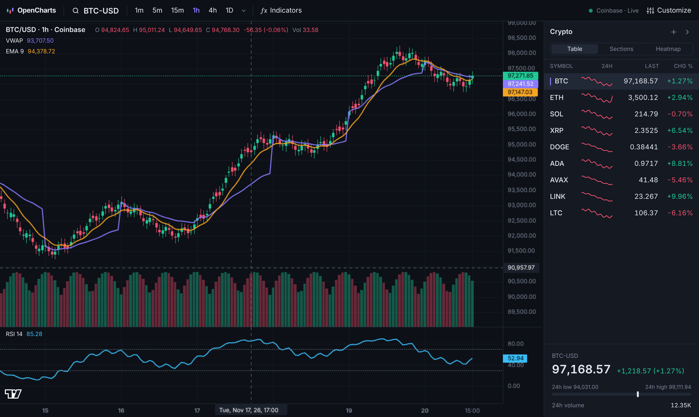

Stockyard
Stockyard is a free, open-source desktop charting app for Mac and Windows. Live crypto charts work the moment you open it, with no account. Connect your own free Tradier account to add US stocks and ETFs.

What you get
- Live candlestick charts for every Coinbase market, plus US stocks through your own Tradier account.
- 60 built-in indicators, your own indicators, and saved indicator stacks.
- More than 50 drawing tools that snap to candles.
- One to eight charts on screen, and saved workspaces.
- Price alerts with desktop notifications, and bar replay.
- 13 themes, six of them animated, and a theme editor.
- Floating widgets for sports scores, an X feed, prices, and notes.
- AI agents that can run the whole app for you, with a permission level you choose.
Every look and layout choice is a setting you can switch, and Stockyard remembers it.
Your keys stay yours
Stockyard reads market data only. It cannot place orders or move money. Your Tradier token lives in your computer's keychain, and no part of the app, including an AI agent, can read it back. Read privacy and safety for the details.
Where to go next
- New here? Start with getting started.
- Looking for a feature? Read the feature guide.
- Want an AI agent to drive Stockyard? Read what an agent can do.
- Want to build on Stockyard? Read writing your own indicator, plugins, and contributing.